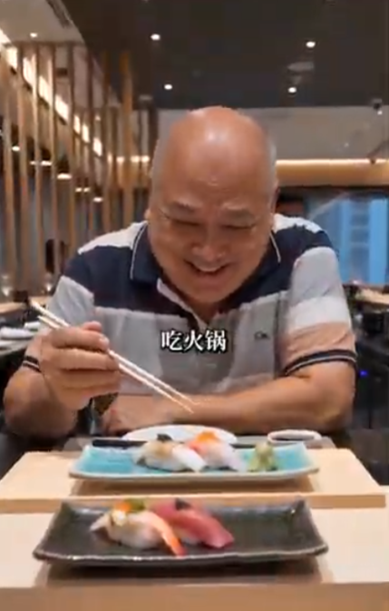
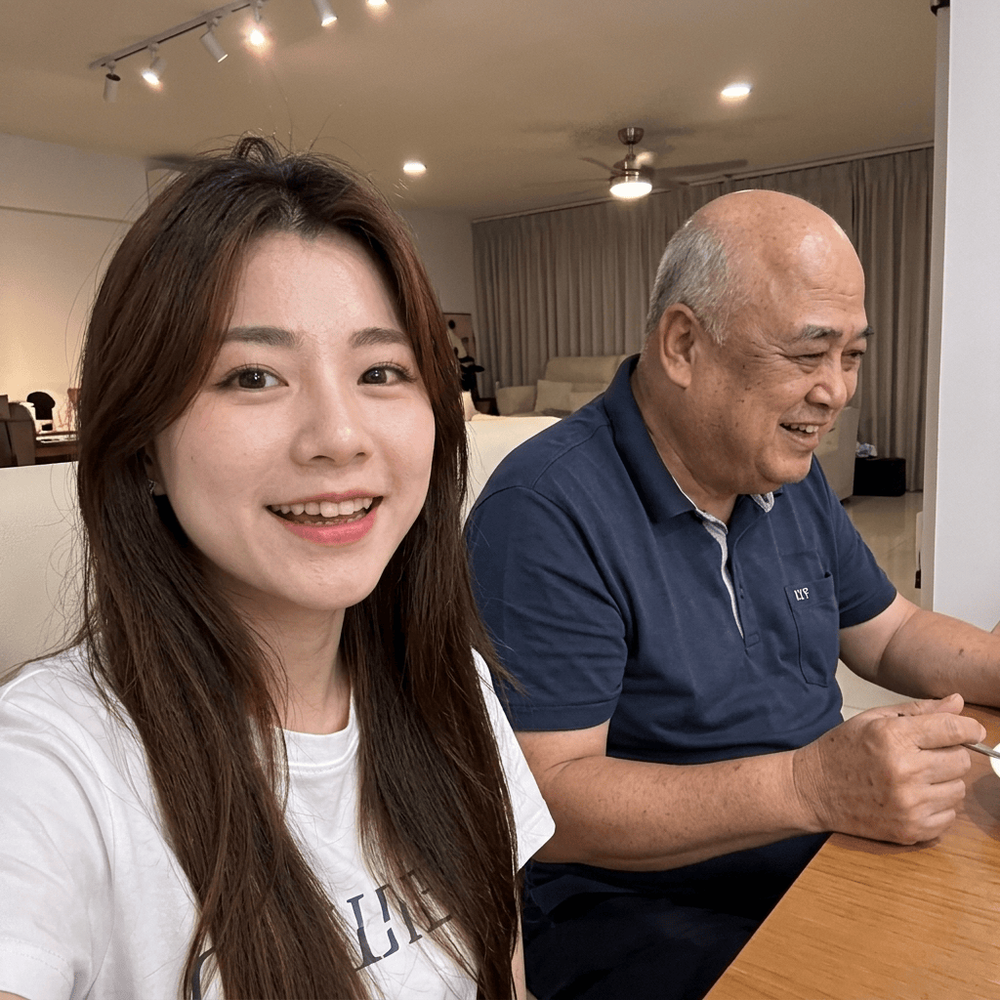

陪伴是最好的礼物：与家人共度美馔佳肴，记录最温暖的幸福时光

在这个快节奏的时代里，最珍贵的幸福往往莫过于放慢脚步，与心爱的家人坐在一起享用一顿温馨的饭菜。每当看到父母在餐桌前露出纯真而灿烂的微笑，所有的辛苦与忙碌仿佛都在一瞬间化为了甘甜。
今天，带爸爸来到一家环境雅致的餐厅，尝尝他喜爱的精致美食。当一道道美味呈上，爸爸拿起筷子，脸上绽放出孩童般满足的笑容。那一刻，餐桌上弥漫的不只是食物的香气，更是浓浓的亲情与温暖。
1. 让陪伴成为日常：增进家庭幸福感的三个小妙招
用心经营家庭生活，能让平淡的日常焕发出源源不断的光彩与温馨：
用心安排家庭聚餐： 定期带父母品尝美味或是亲手下厨，用精致的一餐一饭表达深深的关爱与孝心。
耐心地倾听与陪伴： 放下手中的工作与手机，静下心来听听父母分享生活中的点滴琐事与回忆。
用镜头记录温馨瞬间： 定格与家人的每一份欢笑，让这些珍贵的回忆在岁月流逝中熠熠生辉。

2. 简单即是美好：珍惜平淡生活中的每一份温馨
回到温馨舒适的家中，与爸爸肩并肩坐在一起，随手拍下一张合影。镜头里的爸爸笑容慈祥，眼神里洋溢着安详与满足。这种简单而直接的幸福，比世界上任何奢华的物品都更加打动人心。
家，是我们最坚强的后盾，也是心灵温暖的港湾。只要家人健康相伴、欢声笑语常在，每一个平凡的日子都是值得感恩与庆祝的好时节。
“陪伴是长情的告白。生活的幸福不在于繁华，而在于有人陪伴你一餐一饭，分享日常中的点滴欢笑。”
多花一点时间陪伴长辈，用行动表达你的关怀。在彼此温暖与呵护的岁月中，让正能量与欢笑永远充盈着我们的家庭。
总结
珍惜眼前的每一份亲情，用爱与陪伴筑起最温暖的家。愿每一个家庭都充满欢歌笑语，享受岁月静好的温馨与美好。
本故事旨在传递家庭温暖、孝亲敬老与珍惜亲情的正能量精神。